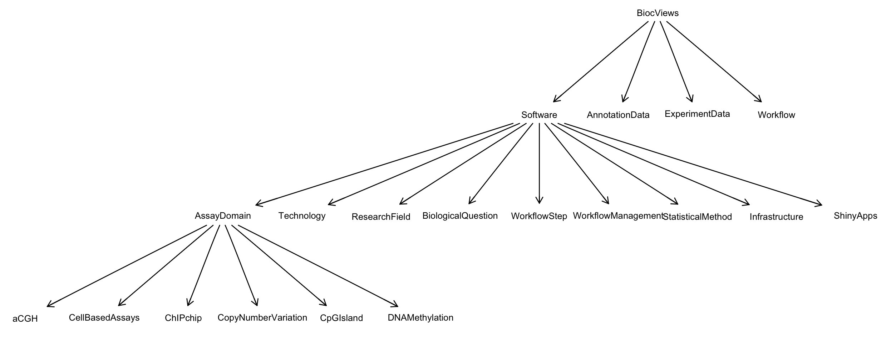

Bioconductor’s methods and data are tagged using an ad hoc terminologic hierarchy called biocViews.
In 2024, a proposal to enhance discoverability of Bioconductor resources through collaboration with EDAM’s ontology developers was funded through the Chan-Zuckerberg Initiative Essential Open Source Software program. This blog post gives an update on the project.
“Task views”, starting with CRAN
CRAN task views are a bonanza for practicing data scientists. Introduced in 2005, “[t]hey provide guidance about which CRAN packages are relevant for tasks related to a certain topic, and can also facilitate automatic installation of all corresponding packages (Zeileis et al. (2023)).
Exploring CRAN task views
But what is a “task view”, and how can a task view do so much? The current content stack for CRAN task views lives in a GitHub organization. The ctv package interrogates the view collection so that we can compute
the number of views on 2025-07-17 to be 48,
a random sample of view names (Survival, ExperimentalDesign, Databases, Omics, MachineLearning), and
the average number of packages per view (121.1).
Subviews
Each view is curated by a team and a narrative web page is compiled to HTML. We use rvest to identify subtopics of the Omics view:
This approach can be used to learn the subtopics of any task view.
Upshots
CRAN task views provide a vocabulary for organizing software packages for data science, narrations of tasks addressed by various packages, mechanisms for tagging packages for discovery through view search, and protocols for adding new views and for adding new packages to existing views. See Zeileis et al. (2023) for full details.
Of note: while CRAN hosts over 22,000 software packages, the number of packages assigned to some view at this time is 4908.
biocViews: a graph is all you get
The biocViews has a badge indicating that it has been in Bioconductor for 19 years. Briefly, the intent was to emulate CRAN task views, with a vocabulary and curation of packages using topics relevant to genomic data science. Figure 1 gives a basic idea of the vocabulary and its structure. There are 497 terms in a directed graph with root “BiocViews”.

Figure 1. A “dot” layout of 20 nodes from the biocViewsVocab graph.
The mapping from biocViews terms to packages is specified in each package’s DESCRIPTION file. For a given release of Bioconductor, the BiocPkgTools includes the mapping from each package to the list of biocViews terms chosen by the package developer to characterize package capabilities. All packages map to at least one term. The average number of terms for software packages is 9, and the maximum number of terms in use for any package is 45, for roastgsa.
Exploring biocViews
An R package, biocEDAM, under development in GitHub, provides a shiny app for comprehensive exploration of the biocViews vocabulary and its mapping to Bioconductor software, annotation, experiment, and workflow packages. Figure 2 provides a screenshot. The app is available for general use at shinyapps.io.
Figure 2. A view of the bvbrowse app with focus on packages mapped to the biocViews term “DifferentialSplicing”, which is a kind of “BiologicalQuestion”.
Upshots
Motivated by CRAN task views, the biocViews vocabulary is deeply entrenched in Bioconductor’s operations. Every package maps to at least one term. The mappings given in DESCRIPTION files are used to sort contributions into Software, Annotation, Experiment and Workflow classes.
Figure 2 shows the family of “biological questions” addressed in the vocabulary. This subvocabulary was created in an ad hoc matter, by request or perceived need. The most recent additions to the vocabulary appear to have been made in 2023, involving the terms LongRead, WorkflowManagement, and Salmo_salar.
Unfortunately, the original motivation of producing curated and narrated topic-level documents in the manner of CRAN task views, was never achieved.
EDAM is a comprehensive ontology of well-established, familiar concepts that are prevalent within scientific data analysis and data management (both within and beyond life sciences and imaging). EDAM includes topics, operations, types of data and data identifiers, and data formats.
A taste of the conceptual network is given in Figure 3. Visit the data node to explore data types enumerated in the system.
Figure 3. A snapshot of an expansion of the interactive network viewer for EDAM.
Comparing biocViews and EDAM
It is natural to expect that natural language processing tools would help identify correspondences between the biocViews vocabulary and EDAM. We used the text2term system Gonçalves et al. (2024) to help identify potential matches of terms using lexical and semantic analysis. Figure 4 gives a slice of the outcome of this approach. The top 3 scoring terms in EDAM are provided for each term in biocViews.
Figure 4. Application of text2term to biocViews for scoring matches to the EDAM ontology.
The interpretation of this analysis is ongoing. Figure 4 shows, for example, that the biocViews term “SingleCell” can be mapped to topic, operation, data concepts in EDAM. The biocViews term seems intended to address single cell sequencing, and perhaps it should be replaced by EDAM topic 4028. It is not clear that an adjudication and replacement process of this sort could scale over the whole biocViews vocabulary, but some direct or very near matches are observed.
Using large language model methods to tag package content
Thanks to code and data made available by Anh Nguyet Vu of Sage Bionetworks, the biocEDAM R package (under development) can use gpt-4o to produce EDAM term assignments for Bioconductor packages. The current process has two steps. The function vig2data processes HTML or PDF vignettes, and uses the extract_data feature of ellmer::chat_openai to produce a fixed-length summary. This summary is then analyzed against schemas for the four main concepts of EDAM: topic, format, operation, data, using specific prompting for extraction of relevant concepts “as specifically as possible”.
Building on this foundation, we are exploring integration with Gemini (via Ellmer) to offer a key‑free backend that makes testing easier for a wider audience. This ongoing work will also be part of discussions at the ISMB/ECCB 2025 CollaborationFest (July 23-24), where we invite contributions and feedback. See our project page for details.
Figure 5 provides the output of this approach for the development vignette of the MSnbase package, which describes data types for analyzing mass spectrometry data.
Figure 5. EDAM terms for the MSnbase package, based on gpt-4o analysis of a vignette for the package that describes how data classes of the package are structured.
Tip 1: Try biocEDAM on Your Package
We invite Bioconductor developers and contributors to explore the biocEDAM R package to test EDAM term assignments on their own packages.
Does the suggested EDAM tagging reflect your package’s functionality?
Are there important concepts missing from EDAM?
Would you suggest refinements to the prompts or mappings?
Your feedback will help improve the tool and guide future ontology development. Please share your thoughts via GitHub issues or join the ongoing EDAM-Bioconductor working group.
Summary
This project began with the notion that an ad hoc enumeration of concepts used to tag Bioconductor packages (biocViews) could be “replaced” with a more systematic ontology (EDAM). It turns out that biocViews has purposes beyond package “tagging” for discovery support, and modifications to the vocabulary have ramifications in other domains of the Bioconductor software ecosystem. It is also clear that EDAM “lacks” concepts that are used in biocViews, and will need to be updated. This is a formal process requiring review and consensus among EDAM maintainers. See this pull request for an example arising from this project.
Ultimately we believe that tooling related to that provided in the biocEDAM package will help propose term assignments for Bioconductor packages (and other artifacts useful in genomic data science) that developers and content creators can adopt as they see fit. This will lead to gains in resource discoverability and will provide values for organizing ecosystems and workflow collections like Bioconductor and bio.tools.
We welcome feedback and contributions — especially from those working on package metadata. If you’d like to try the biocEDAM tooling, see Tip 1 above.
Acknowledgments
This work was supported in part by a Chan-Zuckerberg Initiative Essential Open Source Software project EOSS6-0000000067, “Ontological resource tagging and discovery for Bioconductor”. Important milestones were reported in a BioHackathon Europe 2024 preprint. A Bioconductor Technical Advisory Board Working Group is currently engaged with these activities.
![]()